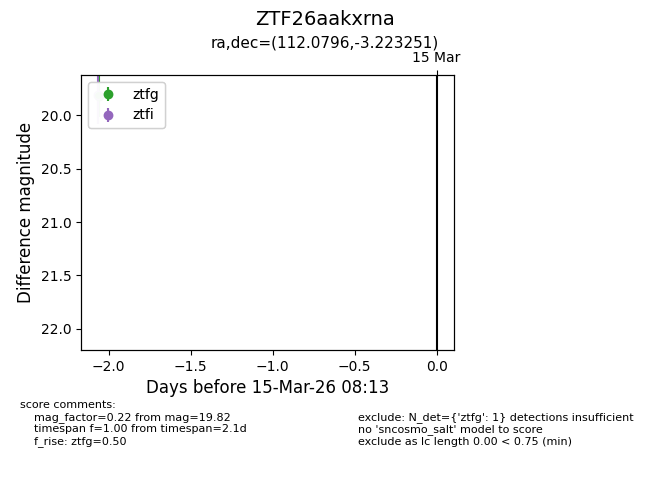
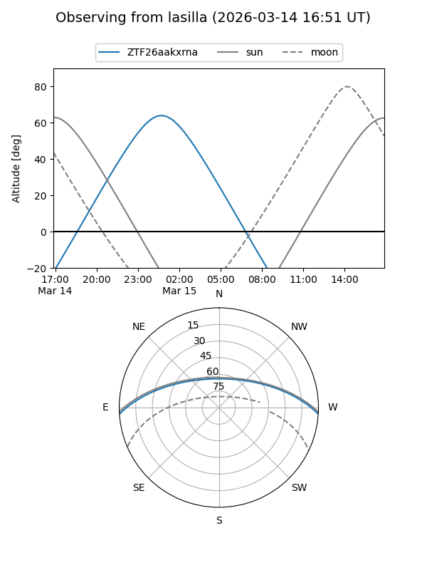
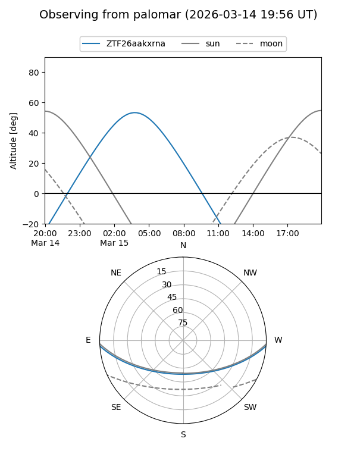

ZTF26aakxrna
Target ZTF26aakxrna at 2026-03-15 08:14
Aliases and brokers:
FINK: link
Lasair: link
ALeRCE: link
alt names
ZTF26aakxrna (ztf,fink_ztf)
Coordinates:
equatorial (ra, dec) = 112.0796,-3.22325
equatorial (HMS+DMS) = 07:28:19.11,-03:13:23.71
galactic (l, b) = (220.0453,+6.70385)
Flags:
Photometry:
last ztfg=19.82
1 ztfg detections
Lightcurve

Visibility


Additional plots